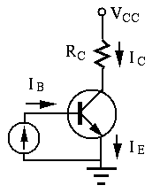
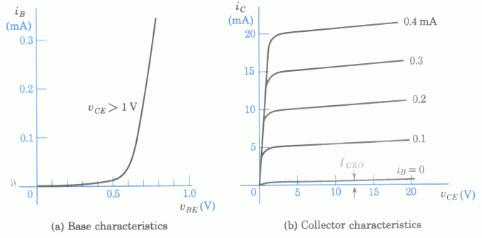
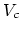
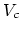
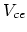
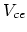
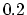
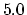

Note: in the figure above, as the assumed polarities of both  and
are the opposite to those assumed in plot (b) below, the negative
signs for both
and
are the opposite to those assumed in plot (b) below, the negative
signs for both  and in the plot should be dropped.
and in the plot should be dropped.



Note: As the convention in the schematics of transistor circuits,
the bottom horizontal line is treated as the ground, and all voltages,
such as  ,  and
,  and  are measured with respect to the
ground as the reference point.
are measured with respect to the
ground as the reference point.
Hint: The relationship  is only valid in the
linear region in the middle range of the load line. However, in
the cut-off region (close to the horizontal axis) and the saturation
region (close to the vertical axis), the above relationship no
longer holds and the actual output current
is only valid in the
linear region in the middle range of the load line. However, in
the cut-off region (close to the horizontal axis) and the saturation
region (close to the vertical axis), the above relationship no
longer holds and the actual output current  and  can
only be found graphically in the output characteristic plot.
and  can
only be found graphically in the output characteristic plot.

|  | ||
|  | ||